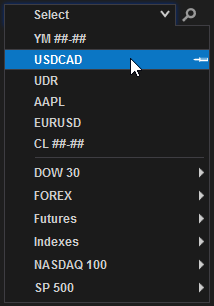
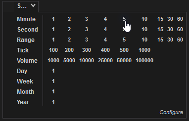
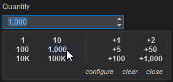
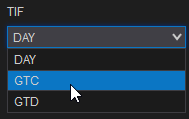
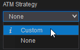

The NTWindow Class
The NTWindow class allows you to quickly build windows using the same style and skin as other windows in NinjaTrader. An NTWindow does not contain user-interface functionality, but rather serves as a container for instances of NTTabPage, which will contain controls and functionality for the window.

|
/* This is where we define our AddOn window. The actual content is contained inside the tabs of the window defined in a custom class inheriting from NTTabPage.
We must create a new window class which inherits from Tools.NTWindow for styling and implements the IWorkspacePersistence interface for the ability to save/restore from workspaces.*/
public class AddOnFrameworkWindow : NTWindow, IWorkspacePersistence
{
public AddOnFrameworkWindow()
{
// set Caption property (not Title), since Title is managed internally to properly combine selected Tab Header and Caption for display in the windows taskbar
// This is the name displayed in the top-left of the window
Caption = "AddOn Framework";
// Set the initial dimensions of the window
Width = 1085;
Height = 900;
}
}
|
Using TabControl for Tab Functionality
After declaring an NTWindow, you can enable tab functionality on it (creating new tabs, copying tabs, etc.). The process for implementing tab functionality must be done within the constructor for your NTWindow, using the following process:
1.Instantiate a new TabControl object
2.Call helper methods of the TabControlManager class, passing in your TabControl object as an argument, to enable specific functionality
3.Use the same approach as #2 to set an NTTabFactory for your TabControl (see below for more information)
4.Set the Content property of your NTWindow to your TabControl
|
public class AddOnFrameworkWindow : NTWindow, IWorkspacePersistence
{
public AddOnFrameworkWindow()
{
...
// TabControl should be created for window content if tab features are wanted
TabControl tc = new TabControl();
// Attached properties defined in TabControlManager class should be set to achieve tab moving, adding/removing tabs
TabControlManager.SetIsMovable(tc, true);
TabControlManager.SetCanAddTabs(tc, true);
TabControlManager.SetCanRemoveTabs(tc, true);
// if ability to add new tabs is desired, TabControl has to have attached property "Factory" set.
TabControlManager.SetFactory(tc, new AddOnFrameworkWindowFactory());
Content = tc;
}
}
|
Note the instantiation of a new AddOnFrameworkWindowFactory in the example above. In this example, AddOnFrameworkWindowFactory is a custom class implementing the INTTabFactory interface. Within this class, the CreateParentWindow() and CreateTabPage() methods contained in INTTabFactory are hidden, as seen below:
|
/* Class which implements Tools.INTTabFactory must be created and set as an attached property for TabControl
in order to use tab page add/remove/move/duplicate functionality */
public class AddOnFrameworkWindowFactory : INTTabFactory
{
// INTTabFactory member. Required to create parent window
public NTWindow CreateParentWindow()
{
return new AddOnFrameworkWindow();
}
// INTTabFactory member. Required to create tabs
public NTTabPage CreateTabPage(string typeName, bool isTrue)
{
return new NinjaTraderAddOnProject.AddOnPage();
}
}
|
Note: Take note of the instantiation of the AddOnPage class in the example above. In our example, AddOnPage is a XAML-defined class. Thus, when CreateTabPage() is called on an instance of AddOnFrameworkWindowFactory, it instantiates our XAML-defined user interface. See below for more information on defining user interfaces in XAML.
|
Creating an NTTabPage within an NTWindow
With an NTWindow defined and a TabControl set up, the next step is to instantiate an NTTabPage and add it to your TabControl. The first step is to define a class inheriting NTTabPage and implementing the IInstrumentProvider and IIntervalProvider interfaces to set up window-linking functionality.
|
/* This is where we define the actual content of the tabs for our AddOn window.
Note: Class derived from Tools.NTTabPage has to be created if instrument link or interval link functionality is desired.
Tools.IInstrumentProvider and/or Tools.IIntervalProvider interface(s) should be implemented.
Also NTTabPage provides additional functionality for properly naming tab headers using properties and variables such as @FUNCTION, @INSTRUMENT, etc. */
public class AddOnFrameworkTab : NTTabPage, NinjaTrader.Gui.Tools.IInstrumentProvider, NinjaTrader.Gui.Tools.IIntervalProvider
{
public AddOnFrameworkTab()
{
AddOnFrameworkWindowFactory myAddOnFrameworkWindowFactory = new AddOnFrameworkWindowFactory();
Content = myAddOnFrameworkWindowFactory.CreateTabPage("AddOnPage",true);
}
}
|
With this class defined, the next step is to add it to your TabControl. You can do this via the AddNTTabPage() helper method contained in your TabControl object:
|
public class AddOnFrameworkWindow : NTWindow, IWorkspacePersistence
{
public AddOnFrameworkWindow()
{
...
/* In order to have link buttons functionality, tab control items must be derived from Tools.NTTabPage
They can be added using extension method AddNTTabPage(NTTabPage page) */
tc.AddNTTabPage(new AddOnFrameworkTab());
}
}
|
Setting Up Workspace Persistence
The last step in setting up the foundation for your custom window is to configure it to be saved and restored in NinjaTrader workspaces.
1.Hide the WorkspaceOptions property of the implemented IWorkspacePersistence interface
2.Use a delegate to set the WorkspaceOptions property to a new instance of the WorkspaceOptions class inside the NTWindow's constructor
3.Hide the Restore() method of IWorkspacePersistence to call the static RestoreFromXElement() method on the MainTabControl property
4.Hide the Save() method of IWorkspacePersistence to call the static SaveToXElement method in the same way
|
public class AddOnFrameworkWindow : NTWindow, IWorkspacePersistence
{
public AddOnFrameworkWindow()
{
...
// WorkspaceOptions property must be set
Loaded += (o, e) =>
{
if (WorkspaceOptions == null)
WorkspaceOptions = new WorkspaceOptions("AddOnFramework-" + Guid.NewGuid().ToString("N"), this);
};
}
// IWorkspacePersistence member. Required for restoring window from workspace
public void Restore(XDocument document, XElement element)
{
if (MainTabControl != null)
MainTabControl.RestoreFromXElement(element);
}
// IWorkspacePersistence member. Required for saving window to workspace
public void Save(XDocument document, XElement element)
{
if (MainTabControl != null)
MainTabControl.SaveToXElement(element);
}
// IWorkspacePersistence member
public WorkspaceOptions WorkspaceOptions { get; set; }
}
|
Using XAML to Define Window Layout
There are two options available for laying out the user interface in your NTTabPage. The first is to use XAML, a markup language commonly used to define graphical interfaces in WPF applications. The process of pairing a XAML file with your C# classes is straightforward; simply create your XAML class in it's own file within your project, and it can be packaged together with your C# code in a DLL.
Example of creating a two-column grid in XAML
|
<Grid Background="Transparent">
<!-- Define our layout with two columns. Rows can then be assigned to columns -->
<Grid.ColumnDefinitions>
<ColumnDefinition Width="55*"/>
<ColumnDefinition Width="45*"/>
</Grid.ColumnDefinitions>
</Grid>
|
Using C# to Define Window Layout
You are not required to use XAML for window layout. You can code everything in C# if you choose. Defining user interface elements in C# is more verbose than XAML, but all of the same functionality is available. The example below shows the C# equivalent of the XAML code in the prior section.
Example of creating a two-column grid in C#
|
Grid grid = new Grid();
grid.Background = new SolidColorBrush(Colors.Transparent);
ColumnDefinition col1 = new ColumnDefinition();
col1.Width = newGridLength(55);
ColumnDefinition col2 = new ColumnDefinition();
col2.Width = newGridLength(45);
grid.ColumnDefinitions.Add(col1);
grid.ColumnDefinitions.Add(col2);
|
Launching Your Window From the Control Center
Once your window is set up and laid out, you will need a way to launch it from the Control Center. This can be done by adding a new item into one of the Control Center's menus (most commonly the menu). This can be accomplished in four steps:
1.Obtain a reference to the Control Center menu in question
2.Instantiate an NTMenuItem
3.Add your NTMenuItem into the menu
4.Attach you NTMenuItem's Click event to a custom event handler
5.Use your custom event handler to launch your NTWindow
|
// Will be called as a new NTWindow is created. It will be called in the thread of that window
protected override void OnWindowCreated(Window window)
{
// We want to place our AddOn in the Control Center's menus
ControlCenter cc = window as ControlCenter;
if (cc == null)
return;
/* Determine we want to place our AddOn in the Control Center's "New" menu
Other menus can be accessed via the control's "Automation ID". For example: toolsMenuItem, workspacesMenuItem, connectionsMenuItem, helpMenuItem. */
existingMenuItemInControlCenter = cc.FindFirst("ControlCenterMenuItemNew") as NTMenuItem;
if (existingMenuItemInControlCenter == null)
return;
// 'Header' sets the name of our AddOn seen in the menu structure
addOnFrameworkMenuItem = new NTMenuItem { Header = "AddOn Framework", Style = Application.Current.TryFindResource("MainMenuItem") as Style };
// Add our AddOn into the "New" menu
existingMenuItemInControlCenter.Items.Add(addOnFrameworkMenuItem);
// Subscribe to the event for when the user presses our AddOn's menu item
addOnFrameworkMenuItem.Click += OnMenuItemClick;
}
// Open our AddOn's window when the menu item is clicked on
private void OnMenuItemClick(object sender, RoutedEventArgs e)
{
Core.Globals.RandomDispatcher.BeginInvoke(new Action(() => new AddOnFrameworkWindow().Show()));
}
|
As always, it is important to unsubscribe from event handlers and dispose of unused resources when they are no longer needed. The OnWindowDestroyed() method can be used to clean up our work from the examples above:
|
// Will be called as a new NTWindow is destroyed. It will be called in the thread of that window
protected override void OnWindowDestroyed(Window window)
{
if (addOnFrameworkMenuItem != null && window is ControlCenter)
{
if (existingMenuItemInControlCenter != null && existingMenuItemInControlCenter.Items.Contains(addOnFrameworkMenuItem))
existingMenuItemInControlCenter.Items.Remove(addOnFrameworkMenuItem);
addOnFrameworkMenuItem.Click -= OnMenuItemClick;
addOnFrameworkMenuItem = null;
}
}
|
Adding NinjaTrader Custom Controls
User-interface controls, such as buttons, text fields, and dropdown menus can be defined via XAML (or C#), then behavior and functionality of those controls can be set via C# along with the core logic of your AddOn. In addition to the standard WPF controls, the NinjaScript AddOn framework provides access to each of the custom NinjaTrader controls that can be found throughout the platform. Below is a list of the most commonly used NinjaTrader controls, along with examples of defining these controls in XAML and adding functionality to them in C#:
1. The Instrument Selector

XAML - Instrument Selector Definition
|
<t:InstrumentSelector x:Name="instrumentSelector" Grid.Row="6" Grid.Column="0" LastUsedGroup="AddOnFramework" InstrumentChanged="OnInstrumentChanged">
<t:InstrumentSelector.Margin>
<Thickness Left="{StaticResource MarginBase}" Top="{StaticResource PaddingColumn}" Bottom="0"/>
</t:InstrumentSelector.Margin>
</t:InstrumentSelector>
|
C# - Using the Instrument Selector
|
private InstrumentSelector instrumentSelector;
...
// Find instrument selector and attach event handler
instrumentSelector = LogicalTreeHelper.FindLogicalNode(pageContent, "instrumentSelector") as InstrumentSelector;
if (instrumentSelector != null)
instrumentSelector.InstrumentChanged += OnInstrumentChanged;
|
2. The Interval Selector

XAML - Interval Selector Definition
|
<t:IntervalSelector x:Name="intervalSelector" Grid.Column="0" HorizontalAlignment="Left" IntervalChanged="OnIntervalChanged">
<t:IntervalSelector.Margin>
<Thickness Left="{StaticResource MarginBase}" Top="{StaticResource PaddingColumn}" Bottom="0"/>
</t:IntervalSelector.Margin>
</t:IntervalSelector>
|
C# - Using the Interval Selector
|
private IntervalSelector intervalSelector;
...
// Find interval selector and attach event handler
intervalSelector = LogicalTreeHelper.FindLogicalNode(pageContent, "intervalSelector") as IntervalSelector;
if (intervalSelector != null)
intervalSelector.IntervalChanged += OnIntervalChanged;
|
3. The Quantity Up/Down Selector

XAML - Quantity Up/Down Selector Definition
|
<t:QuantityUpDown x:Name="qudSelector" Value="1" Grid.Row="12" Grid.Column="0">
<t:QuantityUpDown.Margin>
<Thickness Left="{StaticResource MarginBase}" Top="{StaticResource MarginControl}" Bottom="0" />
</t:QuantityUpDown.Margin>
</t:QuantityUpDown>
|
C# - Using the Quantity Up/Down Selector
|
private QuantityUpDown qudSelector;
...
// Find Quanity selector
qudSelector = LogicalTreeHelper.FindLogicalNode(pageContent, "qudSelector") as QuantityUpDown;
|
4. The Time-in-Force Selector

XAML - Time-in-Force Selector Definition
|
<t:TifSelector x:Name="tifSelector" Grid.Row="12" Grid.Column="1">
<t:TifSelector.Margin>
<Thickness Left="{StaticResource MarginButtonLeft}" Top="{StaticResource MarginControl}" Right="0" Bottom="0" />
</t:TifSelector.Margin>
</t:TifSelector>
|
C# - Using the Time-in-Force Selector
|
private TifSelector tifSelector;
...
// Find TIF selector
tifSelector = LogicalTreeHelper.FindLogicalNode(pageContent, "tifSelector") as TifSelector;
// Be sure to bind our account selector to our TIF selector to ensure proper functionality
tifSelector.SetBinding(TifSelector.AccountProperty, new Binding { Source = accountSelector, Path = new PropertyPath("SelectedAccount") });
// When our TIF selector's selection changes
tifSelector.SelectionChanged += (o, args) =>
{
// Change the selected TIF in the ATM strategy too
if (atmStrategySelector.SelectedAtmStrategy != null)
{
atmStrategySelector.SelectedAtmStrategy.TimeInForce = tifSelector.SelectedTif;
}
};
|
5. The ATM Strategy Selector

XAML - ATM Strategy Selector Definition
|
<AtmStrategy:AtmStrategySelector x:Name="atmStrategySelector" LinkedQuantity="{Binding ElementName=qudSelector, Path=Value, Mode=OneWay}" Grid.Row="12" Grid.Column="2">
<AtmStrategy:AtmStrategySelector.Margin>
<Thickness Left="{StaticResource MarginButtonLeft}" Top="{StaticResource MarginControl}" Right="{StaticResource MarginBase}" Bottom="0" />
</AtmStrategy:AtmStrategySelector.Margin>
</AtmStrategy:AtmStrategySelector>
|
C# - Using the ATM Strategy Selector
|
private AtmStrategy.AtmStrategySelector atmStrategySelector;
...
// Find ATM Strategy selector and attach event handler
atmStrategySelector = LogicalTreeHelper.FindLogicalNode(pageContent, "atmStrategySelector") as AtmStrategy.AtmStrategySelector;
atmStrategySelector.Id = Guid.NewGuid().ToString("N");
if (atmStrategySelector != null)
atmStrategySelector.CustomPropertiesChanged += OnAtmCustomPropertiesChanged;
// Be sure to bind our account selector to our ATM strategy selector to ensure proper functionality
atmStrategySelector.SetBinding(AtmStrategy.AtmStrategySelector.AccountProperty, new Binding { Source = accountSelector, Path = new PropertyPath("SelectedAccount") });
// When our ATM selector's selection changes
atmStrategySelector.SelectionChanged += (o, args) =>
{
if (atmStrategySelector.SelectedItem == null)
return;
if (args.AddedItems.Count > 0)
{
// Change the selected TIF in our TIF selector too
NinjaTrader.NinjaScript.AtmStrategy selectedAtmStrategy = args.AddedItems[0] as NinjaTrader.NinjaScript.AtmStrategy;
if (selectedAtmStrategy != null)
{
tifSelector.SelectedTif = selectedAtmStrategy.TimeInForce;
}
}
};
|
Linking with Other Windows
If you utilize NinjaTrader controls to allow selection of instruments or intervals, you can add instrument or interval linking functionality to your window. The PropagateInstrumentChange() and PropagateIntervalChange() methods can be used to accomplish this. To call PropagateIntervalChange(), use the process below:
1.Hide the Instrument property of the IInstrumentProvider interface, which your NTTabPage inheriting class should be implementing
2.Call PropagateInstrumentChange() within the setter for the hidden Instrument property
|
// IInstrumentProvider member. Required if you want to use the instrument link mechanism on this window.
public Cbi.Instrument Instrument
{
get { return instrument; }
set
{
// Send instrument to other windows linked to the same color
PropagateInstrumentChange(value);
}
}
|
In a real-world scenario, you would most likely use an instrument selector to call the setter for the Instrument property. Thus, when a user toggled the instrument selector, PropagateInstrumentChange() would be called in addition to any other logic you put in place. In the same way, you can use an interval selector to push changes to the Interval Linking feature. In this case, you can attach a custom event handler to an interval selector's IntervalChanged event, then call PropagateIntervalChange() within that event handler:
|
...
// Find an interval selector that we've added to our UI, and attach a custom event handler
intervalSelector = LogicalTreeHelper.FindLogicalNode(pageContent, "intervalSelector") as IntervalSelector;
if (intervalSelector != null)
intervalSelector.IntervalChanged += OnIntervalChanged;
...
// This method is fired when our interval selector changes intervals
private void OnIntervalChanged(object sender, BarsPeriodEventArgs args)
{
if (args.BarsPeriod == null)
return;
PropagateIntervalChange(args.BarsPeriod);
}
|